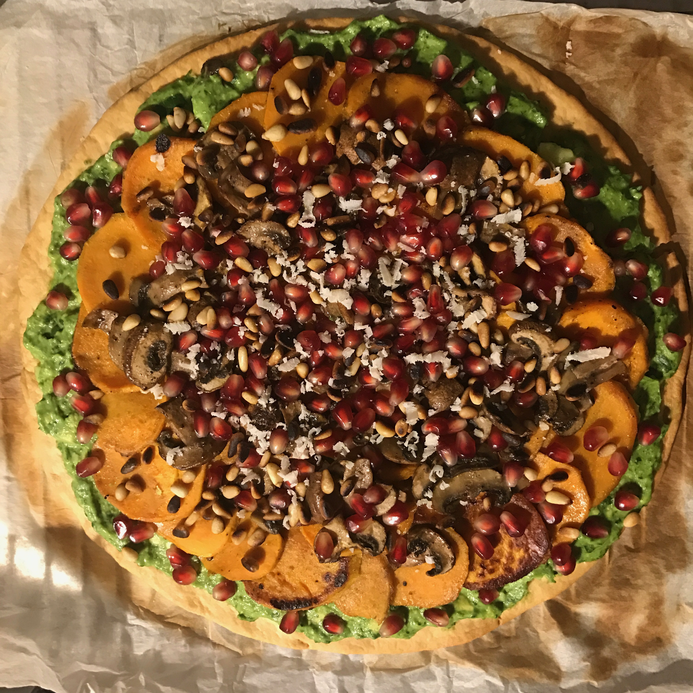
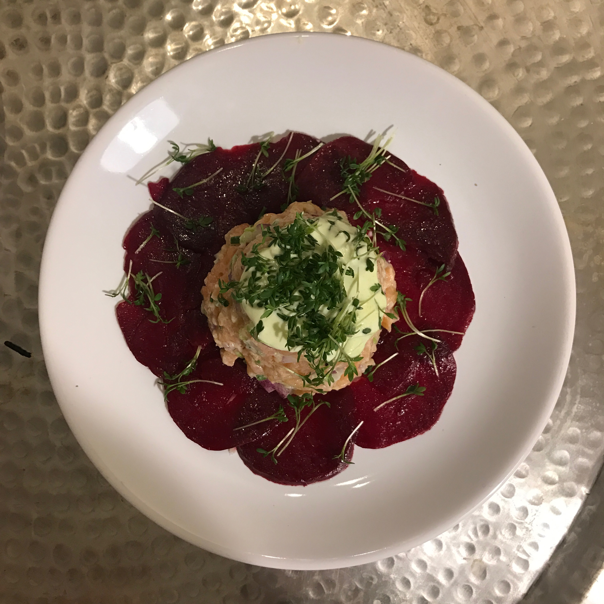
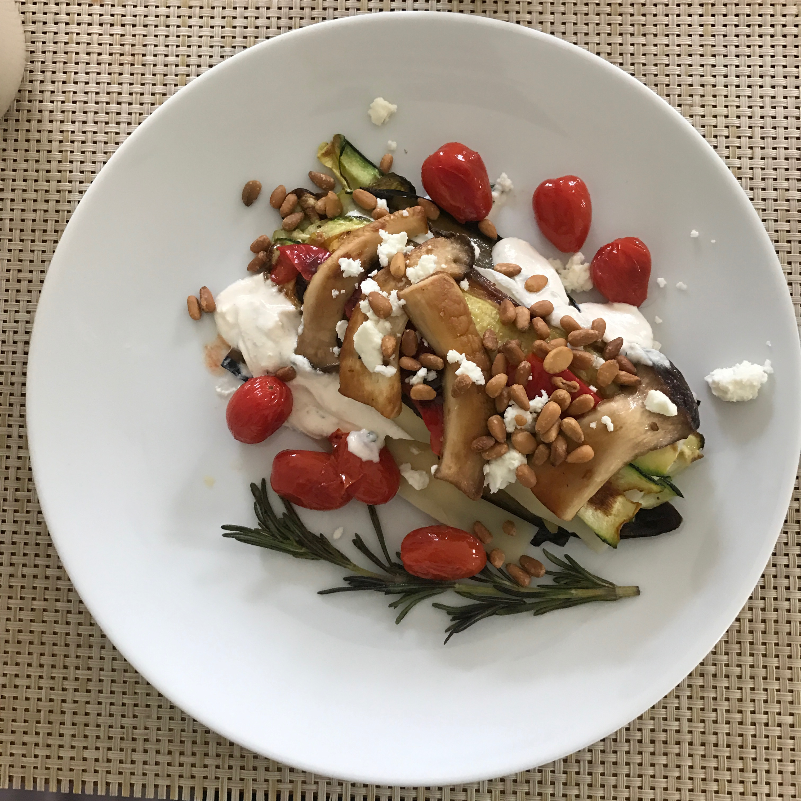

When I was a little girl I loved to cook, spending hours in the kitchen with my mother, making a mess but learning delicious recipes, using authentic, seasonal, fresh ingredients and preparing everything from scratch. Today, I am still that same little girl playing in the kitchen. I like to experiment with different tastes and textures to create my own personal recipes. Cooking, eating healthy food and staying active have always been my life-long passion and – indeed – way of life.
In the following I will present you my 3 favourite recipes:
|  |  |  |
Sweet Potato PizzaThis vegan, gluten-free sweet potato pizza crust is as nourishing as it is flavorful. Steamed sweet potatoes are mixed with oat flour, a bit of almond meal, a chia egg, olive oil, apple cider vinegar, and a zesty array of spices. The crust puffs as it bakes and the seasonings create the most wonderful aroma. |
Salmon Tatare on Red Beet CarpaccioAn explosion of rich taste: This great recipe for cured salmon infused with the earthy sweetness and vibrant colour of beetroot. This dish is as visually stunning, as it is delicious - exactly the right starter for a special occasion to impress all your guests! |
Vegan LasagnaThe best damn vegan lasagna is the one you make at home! This super-healthy vegan lasagna is hearty, chock full of vegetables, and so so good! I'm sure Italians would not be amused by putting vegan and lasagna in the same sentence, but it's delicious and very easy to make. |